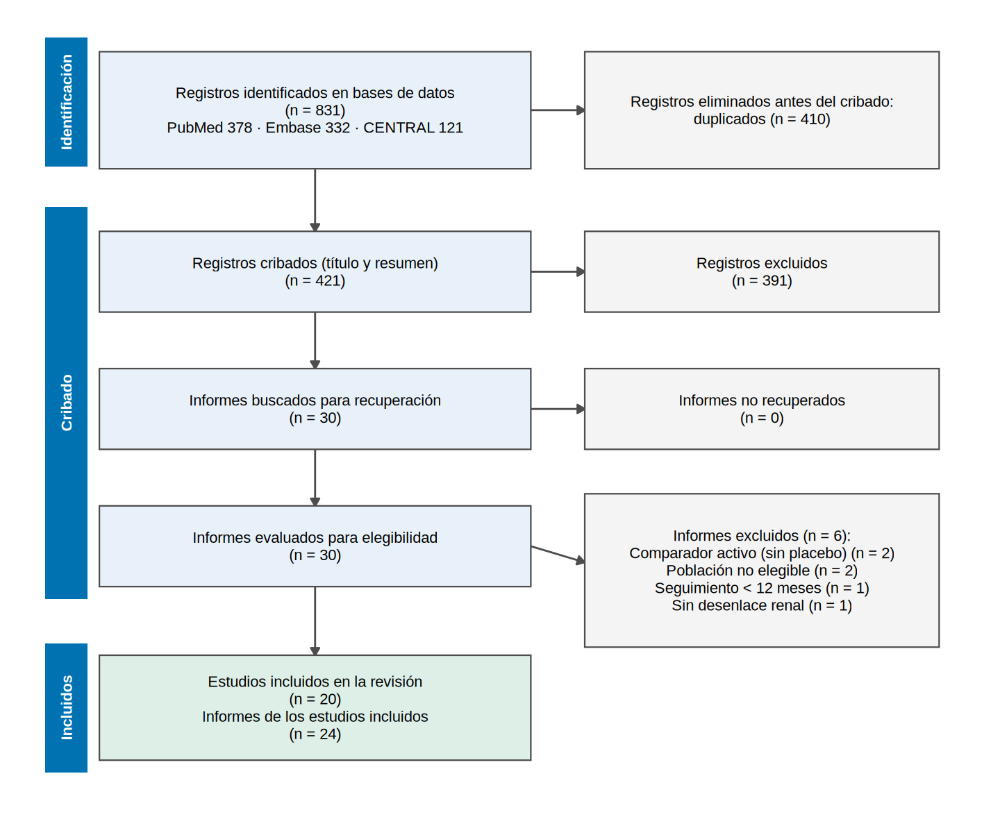

library(tidyverse)
source("R/funciones_extra_a.R") # num(), pct()
source("R/funciones_cap21.R") # simular_busqueda(), flujo_prisma_simulado(), dibujar_prisma()
theme_set(theme_minimal(base_size = 12))
# Los 20 ensayos que acabarán incluidos (FICTICIOS: iSGLT2 frente a placebo en ERC; los usaremos en 21.3-21.6)
ensayos <- read_csv("Bases/metaanalisis_isglt2.csv", show_col_types = FALSE)Protocolo y pregunta PICOS
Nota🩺 Escenario
Tu servicio quiere decidir si ofrece un iSGLT2 a todos los pacientes con ERC, incluidos los que no tienen diabetes. Hay muchos ensayos, algunos pequeños y otros enormes, y los resúmenes de congresos se contradicen. Un colega propone: «busquemos en PubMed y hagamos un metaanálisis». Tú sabes lo que pasa si se empieza así: cada decisión (qué ensayos entran, qué desenlace se analiza) se toma viendo los resultados, y el metaanálisis termina confirmando lo que ya se creía. La defensa es escribir un protocolo antes de mirar nada.
Una revisión sistemática responde una pregunta con un método explícito y reproducible: busca todos los estudios que cumplen unos criterios fijados de antemano, los evalúa y los resume. El metaanálisis es la parte cuantitativa (combinar las estimaciones de los estudios); una revisión sistemática puede no tener metaanálisis, pero un metaanálisis sin revisión sistemática detrás es solo un promedio de lo que alguien eligió.
Lo que vamos a hacer
- Traducir la duda clínica a una pregunta PICOS y fijar los criterios de elegibilidad.
- Ver qué debe tener un protocolo y para qué sirve registrarlo (PROSPERO, PRISMA-P).
-
Dibujar un diagrama de flujo PRISMA 2020 con
ggplot2, con los números de un cribado simulado (el de 21.2).
Todo lo de este capítulo es ficticio: los ensayos, sus nombres, las referencias y las bases de datos. No hay ninguna búsqueda real detrás; sirven para practicar el método con una verdad conocida.
Paso 1: de la duda clínica a la pregunta PICOS
La pregunta se descompone en cinco piezas, las siglas PICOS (Population, Intervention, Comparator, Outcome, Study design). Para nuestro escenario:
- P (población): adultos con ERC (TFGe < 60 mL/min/1.73 m² y/o albuminuria, durante ≥ 3 meses), con o sin diabetes, sin diálisis ni trasplante.
- I (intervención): un iSGLT2 (dapagliflozina, empagliflozina, canagliflozina…) a dosis habituales.
- C (comparador): placebo.
- O (desenlaces): el primario es un evento renal compuesto (caída sostenida de la TFGe, falla renal o muerte de causa renal); los secundarios, la pendiente de TFGe y los eventos adversos.
- S (diseño): ensayos clínicos aleatorizados con seguimiento de al menos 12 meses.
Esa es la forma de una pregunta de intervención. Según el tipo de pregunta, las siglas cambian: PECO si la exposición no se asigna (¿el tabaquismo acelera la ERC?), PIRO en pruebas diagnósticas (Index test, Reference standard) y PICOTS en pronóstico y predicción, donde importan también el momento (Timing) y el entorno (Setting). La estructura fuerza a decidir qué se compara con qué, la misma disciplina que exige una buena pregunta causal.
El nivel de detalle es una decisión de fondo. Una pregunta demasiado amplia («cualquier fármaco en cualquier enfermedad renal») mezcla estudios que no responden la misma cosa; una demasiado estrecha («dapagliflozina 10 mg en ERC G4 sin diabetes») deja sin estudios. Aquí aceptamos poblaciones diferentes (distinta albuminuria, con o sin diabetes) y lo declaramos: la variación del efecto según la albuminuria será una pregunta prevista de antemano en el protocolo (metarregresión, 21.6), no un hallazgo pescado después.
Paso 2: criterios de elegibilidad
Los criterios de elegibilidad son el filtro que se aplica a cada registro. Deben ser operativos: dos revisores que los lean por separado tienen que llegar a la misma decisión. Para los datos que vamos a usar, algunos criterios se pueden comprobar con las columnas de la base:
# Criterios de inclusión que podemos verificar en los 20 ensayos ya incluidos (ficticios)
ensayos |>
summarise(ensayos = n(),
pacientes = sum(n_trat + n_ctrl),
seguimiento_minimo_meses = min(seguimiento_meses), # criterio: >= 12 meses
con_eventos_renales = sum(ev_trat + ev_ctrl > 0), # criterio: reportan el desenlace primario
primer_anio = min(anio), ultimo_anio = max(anio))# A tibble: 1 × 6
ensayos pacientes seguimiento_minimo_meses con_eventos_renales primer_anio
<int> <dbl> <dbl> <int> <dbl>
1 20 33129 13 20 2008
# ℹ 1 more variable: ultimo_anio <dbl>Qué vemos. Los 20 ensayos suman 33 129 pacientes, el seguimiento mínimo es de 13 meses (cumple el criterio de ≥ 12) y todos reportan eventos renales. Si un estudio llega al texto completo y no cumple un criterio, se excluye con el motivo anotado (ver el diagrama de flujo, más abajo). Nunca se excluye «porque el resultado no cuadra».
Paso 3: qué debe tener el protocolo
El protocolo es un documento breve, fechado, que fija las reglas antes de extraer datos. La guía de referencia para escribirlo es PRISMA-P (Preferred Reporting Items for Systematic review and Meta-Analysis Protocols, 2015), una lista de 17 ítems agrupados así:
- Administración: título, autores y sus roles, número de registro, enmiendas, financiación.
- Introducción: justificación y objetivos en formato PICOS.
- Métodos, búsqueda y selección: criterios de elegibilidad, fuentes de información, estrategia de búsqueda completa (21.2), gestión de registros y proceso de selección.
- Métodos, datos y sesgo: qué se extrae (21.3), cómo se evalúa el riesgo de sesgo de cada estudio, qué desenlaces tienen prioridad.
- Síntesis: modelo estadístico (21.4), cómo se medirá la heterogeneidad (21.5), qué subgrupos o metarregresiones están previstos y cómo se evaluará el sesgo de publicación (21.6).
- Certeza de la evidencia: el sistema que se usará para calificarla (GRADE, Cap. 22).
Una vez escrito, se registra. PROSPERO es el registro internacional de protocolos de revisiones sistemáticas con desenlaces de salud, mantenido por el Centre for Reviews and Dissemination de la Universidad de York. El registro da un número (de la forma CRD42 seguido de dígitos), deja la fecha demostrable y permite comprobar si la revisión publicada hizo lo que dijo. Se registra antes de empezar la extracción. Las enmiendas son legítimas, pero se anotan con fecha y motivo; lo que no es legítimo es cambiar el desenlace primario después de ver los datos.
Tip💡 Y si no es una revisión de intervenciones
El protocolo y el registro sirven igual para revisiones de pronóstico, diagnóstico o de métodos. Para revisiones que no caben en PROSPERO existen alternativas abiertas (por ejemplo, el repositorio OSF). Lo importante no es el sitio, sino que el documento tenga fecha y sea público antes de los resultados.
Paso 4: el informe final, PRISMA 2020
Cuando la revisión termina se informa con PRISMA 2020 (Preferred Reporting Items for Systematic reviews and Meta-Analyses; Page y cols., BMJ 2021): una lista de 27 ítems y un diagrama de flujo que cuenta, paso a paso, cuántos registros se encontraron y cuántos quedaron. El diagrama responde dos preguntas del lector: ¿se perdió algo por el camino? y ¿por qué se excluyó cada informe?
Para dibujarlo necesitamos los números. En lugar de inventarlos, los obtenemos de un cribado simulado (la biblioteca de registros y el cribado por dos revisores se construyen paso a paso en 21.2):
n_registros n_duplicados n_cribados n_excl_ta n_buscados n_excl_ft
831 410 421 391 30 6
n_informes n_estudios
24 20 n_prisma$motivos# A tibble: 4 × 2
motivo_ft n
<chr> <int>
1 Comparador activo (sin placebo) 2
2 Población no elegible 2
3 Seguimiento < 12 meses 1
4 Sin desenlace renal 1Ahora el diagrama. La función dibujar_prisma() (en R/funciones_cap21.R) usa solo ggplot2 (rectángulos, texto y flechas), así que funciona en cualquier instalación y tú decides el diseño:
dibujar_prisma(n_prisma)
Qué vemos.
- Se identificaron 831 registros en tres bases; al eliminar los 410 duplicados quedaron 421 trabajos distintos para cribar. El 49 % de lo que devuelven las bases es trabajo repetido: por eso la deduplicación (21.2) es un paso real y no un detalle.
- En título y resumen se descartó el 93 %; se evaluaron 30 textos completos y se excluyeron 6, cada uno con su motivo (Comparador activo (sin placebo); Población no elegible; Seguimiento < 12 meses; Sin desenlace renal).
- Quedaron 20 estudios incluidos, descritos en 24 informes. La diferencia (4) son informes secundarios de ensayos ya incluidos (análisis post hoc, seguimientos). En el metaanálisis cuenta el estudio, no el informe: contar dos veces los mismos pacientes es un error clásico.
- Los datos de
Bases/metaanalisis_isglt2.csvtienen 20 ensayos: es el mismo número que los estudios incluidos del diagrama (20). Esa es la base de los subcapítulos 21.3 a 21.6.
Si ya tienes tus propios números, no hace falta simular: construye una lista con los mismos nombres (n_bases, n_registros, n_duplicados, n_cribados, n_excl_ta, n_buscados, n_no_recuperados, n_evaluados, motivos, n_excl_ft, n_informes, n_estudios) y pásala a dibujar_prisma(). El paquete PRISMA2020 y la aplicación web asociada hacen lo mismo con una plantilla de hoja de cálculo (no instalado en el entorno de pruebas del libro; no incluyo código que no puedo verificar).
Trampas frecuentes
Advertencia⚠️ Errores clásicos del protocolo
- Escribir el protocolo después de ver los resultados (o «actualizarlo» para que coincida): la pregunta, los criterios y el desenlace primario se congelan antes de extraer datos.
- Cambiar el desenlace primario porque otro dio un resultado más llamativo (outcome switching). Si hay una razón válida, se documenta como enmienda con fecha.
- Pregunta demasiado amplia, que mezcla poblaciones y desenlaces que no comparten mecanismo, y produce un promedio sin significado clínico (esto reaparece en la heterogeneidad, 21.5).
- Contar informes como estudios en el diagrama o en el análisis.
- Criterios vagos («estudios de calidad suficiente»): si dos revisores no pueden aplicarlos igual, no son criterios.
Importante🎯 En resumen
- Una revisión sistemática empieza con una pregunta PICOS y un protocolo fechado (PRISMA-P), idealmente registrado (PROSPERO) antes de extraer datos.
- Los criterios de elegibilidad deben ser operativos y se aplican igual a todos los registros; las exclusiones se anotan con motivo.
- El informe sigue PRISMA 2020: 27 ítems y un diagrama de flujo. En nuestro cribado simulado, 831 registros terminaron en 20 estudios (24 informes).
- El análisis cuenta estudios, no informes. Los subgrupos y metarregresiones que importan se declaran de antemano.
Ejercicio
- Escribe la pregunta PICOS de una revisión sobre bicarbonato oral en ERC (el tema del Cap. 11): ¿qué desenlace primario elegirías y por qué?
- Cambia en
dibujar_prisma()los números de una copia den_prisma(por ejemplo, 3 informes no recuperados) y comprueba que el diagrama se actualiza. ¿Qué otro motivo de exclusión añadirías a una lista real? - Escribe, para el protocolo, tres subgrupos o análisis de sensibilidad que declararías a priori (por ejemplo, albuminuria alta frente a baja, ensayos con riesgo de sesgo alto) y por qué conviene hacerlo antes de ver los datos.
Referencias
- Page MJ y cols. The PRISMA 2020 statement: an updated guideline for reporting systematic reviews. BMJ. 2021;372:n71.
- Moher D y cols. Preferred reporting items for systematic review and meta-analysis protocols (PRISMA-P) 2015 statement. Syst Rev. 2015;4:1.
- Higgins JPT y cols. (eds.). Cochrane Handbook for Systematic Reviews of Interventions. Cochrane.